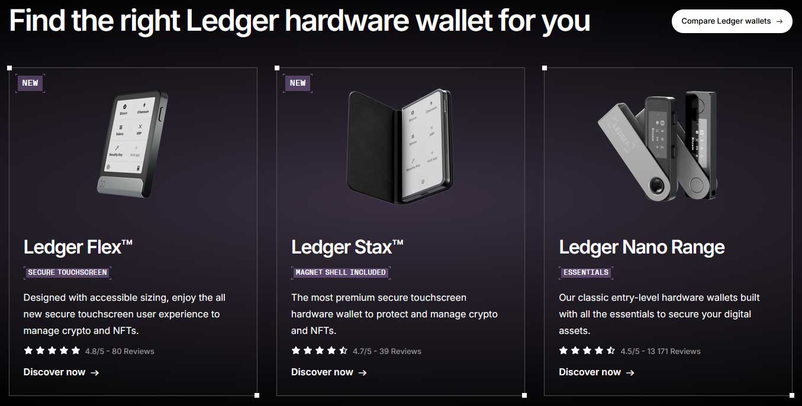

Staying ahead in the digital security space requires more than just owning a Ledger device — it requires managing it smartly. That’s where the Ledger Live Login process comes into play. If you're looking to enhance the way you manage your Ledger wallet, understanding how to log in securely and navigate Ledger Live is vital.
In this guide, we break down everything — from what Ledger Live is, to how to use it, its security benefits, and how to troubleshoot common login issues — all while keeping it compact and practical.
If you’re using a Ledger hardware wallet, you’ll need a powerful companion app to interface with your device. This is where Ledger Live comes into play.
Ledger Live is an all-in-one platform that allows you to view, manage, and protect your digital assets using your wallet. Designed by Ledger, this application helps you set up your wallet, install apps, update firmware, manage your holdings, and review transactions — all from a user-friendly dashboard.
The Live application of Ledger is available across multiple platforms, including desktop (Windows, macOS, Linux) and mobile (iOS and Android). It ensures you always have full control and visibility over your hardware device.
To ensure you’re using the most secure and official version, always begin your installation from ledger.com/start. Here’s how to proceed:
Setting up and logging in to Ledger Live is a straightforward process. Here’s how you do it:
Step-by-Step Ledger Live Login Instructions:
1. Download the App
Visit ledger.com/start or ledger.com/ledger-live-download to get the latest version of the Ledger Live app for your operating system.
2. Install and Launch the App
Once downloaded, install the application. Open the Ledger Live app and select “Get Started.”
3. Connect Your Ledger Device
Plug in your Ledger hardware wallet using a USB cable. The app will prompt you to connect the device.
4. Authenticate Your Device
Unlock your wallet by entering your PIN directly on the device.
5. Allow Ledger Manager Access
5.Confirm the Ledger Manager access on the hardware device to proceed.
6. Set Up or Restore Your Account
Choose to either set up a new device or restore an existing one using your recovery phrase. This helps Ledger Live verify your identity securely.
7. Access Your Portfolio
Once authenticated, you can now fully explore your Ledger wallet portfolio, including accounts, balances, and transactions.
Important: The Ledger Live Login process is local and device-bound. No credentials like usernames or passwords are used or stored online, enhancing overall security.
Without a doubt, Ledger Live is built with layered security in mind. Here’s what makes it a secure interface:
Also, since the Live app only interacts with your hardware wallet, there's no risk of unauthorized access through phishing or online breaches — provided you do not share your recovery phrase with anyone.
One of the major strengths of Ledger Live is its wide compatibility. It works seamlessly across:
Whether you're on the go or managing your wallet from a workstation, Ledger Live ensures your login and management experience remains consistent and reliable.
No, you cannot use Ledger Live without a connected hardware wallet. The app is designed specifically to interface with Ledger devices for enhanced offline key management.
This prevents the misuse of the platform by anyone who does not have physical access to the connected device.
In short, Ledger Live Login only works when your Ledger device is plugged in and authenticated using your PIN. This combination acts as a digital vault, allowing only the rightful owner access to sensitive functions.
If you’ve lost your device or can’t remember your PIN, don’t worry — Ledger Live has a recovery mechanism.
You can restore your wallet and resume access via the recovery phrase you received when you set up your wallet. Here's what to do:
This process proves why securing your recovery phrase is so crucial. Keep it safe, offline, and never share it.
Even though the process is simple, some users may run into occasional issues. Here are the most common ones and how to solve them:
Ledger Live Login isn’t just about accessing an application — it’s about creating a highly secure environment where only you can manage your wallet. Whether you're installing it for the first time or logging in after a break, the process is intuitive and built for user safety. With robust hardware integration, high-level encryption, and streamlined performance, Ledger Live ensures your digital asset management is as secure as it is simple.